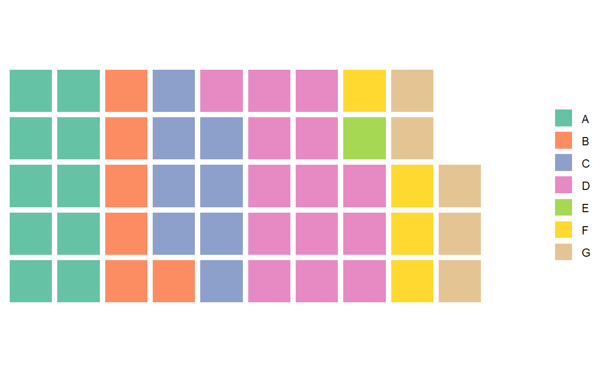
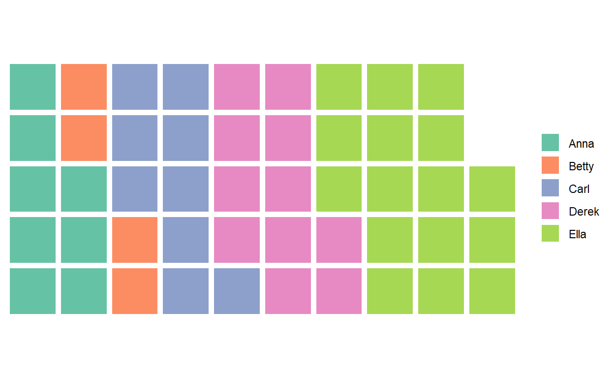

Discussion of apportionment problems and the rabbit hole I went down.
This blog post was originally written in 2015 - I’m just migrating it here now. I had forgotten all about this - it’s been sort-of fun to go through this again.
Warning: This is a long post. The big picture can be gotten from the first few paragraphs. After that, I dive into all the various functions I wrote to solve apportionment problems as applied to US government.
I think the moral of this story, is that sometimes you find a scratch you need to itch, and you can’t let it go and it ends up with you making an R package for something that you don’t really have a need for.
So why did I start to write an apportionment package that works out how to best apportion seats by state to the US House of Representatives? It seems illogical as I am not an American, I am not a political scientist, and if I’m honest, I don’t fully understand the American political system or really have much interest in it. Further, I’d never even heard of apportionment as a thing until I fell down this rabbit hole.
This is a classic case of having one simple question that I wanted to answer and then being led down a path of ever expanding further questions. It started with me playing around with Bob Rudis’ excellent waffle package. I’ll walk you through the steps…
I was interested in plotting data such as the following example. Here there are seven groups A to G, with each one possessing an integer value that are stored in a vector x. The sum of x is 255. Using the waffle() function, I am plotting this data with each square representing ‘5’ of the total sum. I’m also using 5 rows to plot the data.
library(waffle)
set.seed(10)
x <- round(runif(7, 1, 100),0)
names(x) <- LETTERS[1:7]
x
A B C D E F G
51 31 43 70 9 23 28
sum(x)
[1] 255
waffle(x/5, rows=5)
It looks pretty. What you might notice is that we have 48 squares meaning that 240 of our total sum are represented (i.e. 48∗5). Or, 15, which would equal 2 squares are not. Breaking it down by group, you can see that there are 10 squares for A meaning that ‘1’ of A’s total of 51 is not represented, 6 squares of B leaving out ‘1’ of B’s total of 31, 8 squares of C meaning that 3 of C’s total of 43 are lost, etc. etc. As D is the only group whose value is divisible by 5, it is the only one whose squares exactly represent its value. The way waffle works is to take the floor or rounded-down value of each groups number (as far as I can tell).
My other interest was in creating charts that represent percentage plots. i.e. to convert each vector into percentages and then to plot those. Like this:
x1 <- (100*x)/sum(x)
x1
A B C D E F G
20.000000 12.156863 16.862745 27.450980 3.529412 9.019608 10.980392
waffle(x1, rows=5)The first thing to note is that there obviously aren’t 100 squares - there are 97. If we go group by group, A is perfectly represented by 20 blocks as it’s percentage is exactly 20%. For each of the others, you’ll notice that the number of squares for each group is the integer part of each percentage (or the floor / rounded down value in other terms).
Summing the fractional parts shows that indeed the missing 3 squares are the fractional parts of each percentage:
#return fractional parts
x1%%1
A B C D E F
0.00000000 0.15686275 0.86274510 0.45098039 0.52941176 0.01960784
G
0.98039216
sum(x1%%1)
[1] 3Obviously, this method of visualizing these data is perfectly appropriate. It may well be (and often will be) just wrong to have extra squares representing a whole percentage point. However, we could easily concede in our example that group G and group C with fractions of .98 and .86 should get an extra square, whereas group F and group B with fractions of .01 and .16 should not. It would be difficult to decide whether E with a fractional of .53 or D with a fractional of .45 should get the last extra square.
Because I wanted to produce a number of waffle plots to compare, I did actually want my graphs to be perfect rectangles of 5 rows by 20 columns and for these extra squares to be allocated. The next question was obviously - what’s the best or fairest method of doing this?
Unsurprisingly to many of you, I had stumbled upon the apportionment paradox that has a long history in American and other countries’ political systems.
The apportR package was therefore my way of collating all the various methods that have been proposed to solve this problem. And it turned out there are an annoyingly large number of methods. I’m not going to detail the code behind each of the functions - but I do explain the logic behind each one. If you’re interested in how the functions are computing the logic, then please go to the apportR homepage - and you can see the functions there.
I will illustrate the general problem with three examples. Each of these datasets comes from my apportR package. The apportR package can be downloaded from github.
library(devtools)
devtools::install_github("jalapic/apportR")
library(apportR)Housework
Here is a common example used to illustrate the problem at hand.
Mom has 50 identical pieces of candy that cannot be broken into bits. She tells her five children that she will divide the candy fairly at the end of the week according to the proportion of housework that each performs.
Here are the minutes worked by each child:
housework
Anna Betty Carl Derek Ella
150 78 173 204 295
#calculate how many candies each should get
candies <- (50*housework) / sum(housework)
candies
Anna Betty Carl Derek Ella
8.333333 4.333333 9.611111 11.333333 16.388889
floor(candies)
Anna Betty Carl Derek Ella
8 4 9 11 16
sum(floor(candies))
[1] 48
waffle(candies, rows=5) 
Anna expects 8.33%, Betty 4.33%, Carl 9.6%, Derek 11.33% and Ella 16.39% of the candies, but they cannot be broken up. Assuming each gets the number of candies equal to their rounded down proportion at least, then Who should get the extra 2 candies that are not yet allocated? Obviously, it’s very hard to work out who. That’s the problem at hand ! (It also turns out this problem is quite contentious when we are dealing with electoral seats and not candies).
Scholarships
There are 12 scholarships to be given out to each of 3 subjects at a university. They are to be awarded based upon the proportion of majors that each subject has.
Here are the majors in each subject as well as the expected number of scholarships each would get out of the 12 available:
English History Psychology
231 502 355
English History Psychology
2.547794 5.536765 3.915441
English History Psychology
2 5 3
[1] 10If each gets the rounded down value that they would expect, where do the remaining 2 scholarships go ? Presumably Psychology should get an extra one as its fractional is .9, but which of English and History should get the other one?
House of Representatives
At the 1792 US House of Representatives elections, a total of 105 seats were to be awarded that would be shared between the 15 states of the union proportional to each state’s population size at the 1790 US census.
More reading can be found here. Here are the states and their population sizes in 1790, followed by the expected number of seats for each state based on there being 105 available:
VA MA PA NC NY MD CT SC NJ NH
630560 475327 432879 353523 331589 278514 236841 206236 179570 141822
VT GA KY RI DE
85533 70835 68705 68446 55540
VA MA PA NC NY MD CT
18.310361 13.802666 12.570050 10.265690 9.628765 8.087560 6.877449
SC NJ NH VT GA KY RI
5.988733 5.214399 4.118263 2.483729 2.056925 1.995073 1.987552
DE
1.612785
VA MA PA NC NY MD CT SC NJ NH VT GA KY RI DE
18 13 12 10 9 8 6 5 5 4 2 2 1 1 1
[1] 97Who should get those 8 extra seats ??? This is a slightly more important question to get right than the fair division of candies (depending upon your perspective)!
I will describe some methods for working this out as well as the functions contained in apportR to represent these methods a bit later in this vignette.
The methods for solving these sorts of questions essentially fall into two broad groups. There are the standard (or non-divisor) methods and the divisor methods. Many (if not all) of them have been discovered independently in various disciplines and so each may have several different names. I will mainly focus on the methods from the historical perspective of the US House of Representatives apportionment problem, as it is the most interesting.
The two main standard non-divisor methods are:
Hamilton’s Method, aka Largest Remainder Method, Vinton’s Method, Hare-Niemeyer Method.
Lowndes’ Method
Hamilton Method
The most simple method was first suggested by Alexander Hamilton in 1792.
Quite straightforwardly, the logic of this method is as follows:
Example
There were 120 seats to be allocated in the House in 1790. The population of each state and the total US population at the 1790 census was as follows:
usa1790
VA MA PA NC NY MD CT SC NJ NH
630560 475327 432879 353523 331589 278514 236841 206236 179570 141822
VT GA KY RI DE
85533 70835 68705 68446 55540
sum(usa1790)
[1] 3615920The standard divisor (which is equivalent to the average number of people that each representative is representing) and standard quotas of each state are therefore:
#standard divisor
std <- sum(usa1790) / 120
std
[1] 30132.67
stq <- usa1790 / std
stq
VA MA PA NC NY MD CT
20.926127 15.774475 14.365771 11.732218 11.004303 9.242926 7.859942
SC NJ NH VT GA KY RI
6.844266 5.959313 4.706586 2.838547 2.350771 2.280084 2.271488
DE
1.843182 The first allocation of seats is the rounded down value of these standard quotas. When summing these values, it is clear that they only sum to 111 seats which is 9 short of the required total of 120.
lowq <- floor(stq)
lowq
VA MA PA NC NY MD CT SC NJ NH VT GA KY RI DE
20 15 14 11 11 9 7 6 5 4 2 2 2 2 1
sum(lowq)
[1] 111The states are then arranged in order of their fractional parts and the states with the 9 largest fractionals are awarded an extra seat. That would be NJ to NC.
rev(sort(stq%%1))
NJ VA CT SC DE
0.959313259 0.926126684 0.859941592 0.844266466 0.843182371
VT MA NC NH PA
0.838547313 0.774475099 0.732217527 0.706586429 0.365771367
GA KY RI MD NY
0.350771035 0.280083630 0.271488307 0.242925728 0.004303193 This can be done using the hamilton() function. The first argument is the named vector of population sizes and the second argument is the number of seats to allocate.
hamilton(usa1790, 120)
VA MA PA NC NY MD CT SC NJ NH VT GA KY RI DE
21 16 14 12 11 9 8 7 6 5 3 2 2 2 2 The 1792 bill proposing this method be used was passed but yet it was not brought into use at this time. Instead, this bill was the very first usage of a Presidential veto by George Washington and a divisor method proposed by Thomas Jefferson was used. I will discuss this method in the divisor methods section. Washington vetoed the bill as Hamilton’s method would have meant that some representatives would be representing fewer than 30,000 individuals which was against the constitution. It was first of only two times that Washington used his Presidential veto.
We can see this here - several states have too many representatives according to the Constitution:
usa1790 / hamilton(usa1790, 120)
VA MA PA NC NY MD CT
30026.67 29707.94 30919.93 29460.25 30144.45 30946.00 29605.12
SC NJ NH VT GA KY RI
29462.29 29928.33 28364.40 28511.00 35417.50 34352.50 34223.00
DE
27770.00
Despite this initial lack of support, Hamilton’s method (also known as Vinton’s method by the mid nineteenth century) was passed into law and adopted by 1850 and continued to be used until the turn of the 20th century. It stopped being used at this time because some strange anomalies or paradoxes were discovered. These are as follows:
Alabama Paradox
In 1880 a government clerk named C. W. Seaton computed apportionments for all potential House sizes between 275 and 350 members. He then wrote to Congress describing that if the House of Representatives had 299 seats, Alabama would get 8 members but it would only receive 7 members if the House had 300 seats. This seemed to be a failure of common sense and became known as the Alabama Paradox.
Here are the state populations for 1880 and the number of seats that would be given under the Hamilton method if the House had 299 or 300 members:
usa1880
Alabama Arkansas California Colorado
1262505 802525 864694 194327
Connecticut Delaware Florida Georgia
622700 146608 269493 1542180
Illinois Indiana Iowa Kansas
3077871 1978301 1624615 996096
Kentucky Louisiana Maine Maryland
1648690 939946 648936 934943
Massachusetts Michigan Minnesota Mississippi
1783085 1636937 780773 1131597
Missouri Nebraska Nevada New Hampshire
2168380 452402 62266 346991
New Jersey New York North Carolina Ohio
1131116 5082871 1399750 3198062
Oregon Pennsylvania Rhode Island South Carolina
174768 4282891 276531 995577
Tennessee Texas Vermont Virginia
1542359 1591749 332286 1512565
West Virginia Wisconsin
618457 1315497
hamilton(usa1880, 299)
Alabama Arkansas California Colorado
8 5 5 1
Connecticut Delaware Florida Georgia
4 1 1 9
Illinois Indiana Iowa Kansas
18 12 10 6
Kentucky Louisiana Maine Maryland
10 6 4 6
Massachusetts Michigan Minnesota Mississippi
11 10 5 7
Missouri Nebraska Nevada New Hampshire
13 3 1 2
New Jersey New York North Carolina Ohio
7 31 8 19
Oregon Pennsylvania Rhode Island South Carolina
1 26 2 6
Tennessee Texas Vermont Virginia
9 9 2 9
West Virginia Wisconsin
4 8
hamilton(usa1880, 300)
Alabama Arkansas California Colorado
7 5 5 1
Connecticut Delaware Florida Georgia
4 1 1 9
Illinois Indiana Iowa Kansas
19 12 10 6
Kentucky Louisiana Maine Maryland
10 6 4 6
Massachusetts Michigan Minnesota Mississippi
11 10 5 7
Missouri Nebraska Nevada New Hampshire
13 3 1 2
New Jersey New York North Carolina Ohio
7 31 8 19
Oregon Pennsylvania Rhode Island South Carolina
1 26 2 6
Tennessee Texas Vermont Virginia
9 10 2 9
West Virginia Wisconsin
4 8
Texas and Illinois would each gain a member whilst Alabama lost one !
New States Paradox
A second paradox of this method also came to light. This is probably best illustrated using the example of Oklahoma which was admitted to the union in 1907. In 1900 the house had 386 seats. According to OK’s population, they should have got 5 seats.
The US population in 1900 and seat allocation according to Hamilton’s method was as follows:
usa1900
NY PA IL OH MO TX MA IN
7264183 6302115 4821550 4157545 3106665 3048710 2805346 2516462
MI IA GA KY WI TN NC NJ
2420982 2231853 2216331 2147174 2067385 2020616 1893810 1883669
VA AL MN MS CA KS LA SC
1854184 1828697 1749626 1551270 1483504 1470495 1381625 1340316
AR MD NE WV CT ME CO FL
1311564 1188044 1066300 958800 908420 694466 539103 528542
WA RI OR NH SD VT ND UT
515572 428556 413536 411588 390638 343641 314454 275277
MT DE ID WY NV
232583 184735 159475 92531 40670
hamilton(usa1900, 386)
NY PA IL OH MO TX MA IN MI IA GA KY WI TN NC NJ VA AL MN MS CA KS LA
38 33 25 21 16 16 14 13 12 11 11 11 11 10 10 10 10 9 9 8 8 8 7
SC AR MD NE WV CT ME CO FL WA RI OR NH SD VT ND UT MT DE ID WY NV
7 7 6 5 5 5 3 3 3 3 2 2 2 2 2 2 1 1 1 1 1 1
but the following happens when adding in Oklahoma and allowing for an extra 5 seats:
usa1907
NY PA IL OH MO TX MA IN
7264183 6302115 4821550 4157545 3106665 3048710 2805346 2516462
MI IA GA KY WI TN NC NJ
2420982 2231853 2216331 2147174 2067385 2020616 1893810 1883669
VA AL MN MS CA KS LA SC
1854184 1828697 1749626 1551270 1483504 1470495 1381625 1340316
AR MD NE OK WV CT ME CO
1311564 1188044 1066300 1000000 958800 908420 694466 539103
FL WA RI OR NH SD VT ND
528542 515572 428556 413536 411588 390638 343641 314454
UT MT DE ID WY NV
275277 232583 184735 159475 92531 40670
hamilton(usa1907, 391)
NY PA IL OH MO TX MA IN MI IA GA KY WI TN NC NJ VA AL MN MS CA KS LA
37 33 25 21 16 16 14 13 12 11 11 11 11 10 10 10 10 9 9 8 8 8 7
SC AR MD NE OK WV CT ME CO FL WA RI OR NH SD VT ND UT MT DE ID WY NV
7 7 6 5 5 5 5 4 3 3 3 2 2 2 2 2 2 1 1 1 1 1 1
As you can see, after OK is added in 1907, New York would lose a seat and gives it to Maine! Again, this seems to fail a common sense test.
Population Paradox
A final paradox that has been found is that states that increase in population more relative to other states over a period of time can even lose seats.
Here is a fictitious example. Say there are five states (A-E) and this is their population in hundreds of thousands at time 1 (states1) and time 2 (states2):
states1 <- c(150, 78, 173, 204, 295)
states2 <- c(150, 78, 181, 204, 296) #C increases by 8, E by 1
names(states1)<-names(states2)<-LETTERS[1:5]
states1
A B C D E
150 78 173 204 295
states2
A B C D E
150 78 181 204 296
A, B and D have remained the same whilst E and C have increased in population. Now say there are 50 seats to allocate - let’s see what happens:
hamilton(states1, 50)
A B C D E
8 4 10 11 17
hamilton(states2, 50)
A B C D E
8 5 10 11 16
Even though E’s population went up by 100,000 it actually lost a representative seat! whilst B whose population stayed the same increased its seat number and C whose population increased by 800,000 remained the same.
Strengths & Weaknesses
The biggest advantage of this method is that it is very easy to calculate and to explain. This method also never violates the quota rule which states that the number of seats ought to be between the lower and upper quota of the standard quota (effectively the floor and ceiling value). The biggest weaknesses are that it throws up these strange paradoxes or common sense failures, and also that it does systematically favor larger states over smaller ones.
Another aside: The zero seats problem - for calculating seats in the House, there must always be at least one seat allocated to every state. The hamilton function does this automatically, so if for instance the standard quota of any state would be e.g. 0.333 and its fraction was not large enough to receive an extra surplus seat, then it will override this and allocate the seat. This happens several times in US census history for Delaware and Nevada.
Other users of this function may want to have the option of allocating 0 to a group. Therefore the sister function to hamilton() is hamilton0() which allows for this.
For example, take the US census in 1880 and 300 available seats in the House:
usa1880
Alabama Arkansas California Colorado
1262505 802525 864694 194327
Connecticut Delaware Florida Georgia
622700 146608 269493 1542180
Illinois Indiana Iowa Kansas
3077871 1978301 1624615 996096
Kentucky Louisiana Maine Maryland
1648690 939946 648936 934943
Massachusetts Michigan Minnesota Mississippi
1783085 1636937 780773 1131597
Missouri Nebraska Nevada New Hampshire
2168380 452402 62266 346991
New Jersey New York North Carolina Ohio
1131116 5082871 1399750 3198062
Oregon Pennsylvania Rhode Island South Carolina
174768 4282891 276531 995577
Tennessee Texas Vermont Virginia
1542359 1591749 332286 1512565
West Virginia Wisconsin
618457 1315497
hamilton(usa1880, 300)
Alabama Arkansas California Colorado
7 5 5 1
Connecticut Delaware Florida Georgia
4 1 1 9
Illinois Indiana Iowa Kansas
19 12 10 6
Kentucky Louisiana Maine Maryland
10 6 4 6
Massachusetts Michigan Minnesota Mississippi
11 10 5 7
Missouri Nebraska Nevada New Hampshire
13 3 1 2
New Jersey New York North Carolina Ohio
7 31 8 19
Oregon Pennsylvania Rhode Island South Carolina
1 26 2 6
Tennessee Texas Vermont Virginia
9 10 2 9
West Virginia Wisconsin
4 8
hamilton0(usa1880, 300)
Alabama Arkansas California Colorado
8 5 5 1
Connecticut Delaware Florida Georgia
4 1 1 9
Illinois Indiana Iowa Kansas
19 12 10 6
Kentucky Louisiana Maine Maryland
10 6 4 6
Massachusetts Michigan Minnesota Mississippi
11 10 5 7
Missouri Nebraska Nevada New Hampshire
13 3 0 2
New Jersey New York North Carolina Ohio
7 31 8 19
Oregon Pennsylvania Rhode Island South Carolina
1 26 2 6
Tennessee Texas Vermont Virginia
9 10 2 9
West Virginia Wisconsin
4 8
Clearly, Nevada would not get a seat unless allowances were made to ensure all states received at least one seat. Alabama would have lost out again in this instance !
This zero issue can also be illustrated with a couple of fair division problems. Say we had five candies to divide to each of 3 children dependent upon how many hours of work they completed.
hours <- c(1,3,11)
names(hours) <- c("Xavier", "Yasmin", "Zach")
hours
Xavier Yasmin Zach
1 3 11
#standard quotas
(5*hours)/ sum(hours)
Xavier Yasmin Zach
0.3333333 1.0000000 3.6666667
If we look at the standard quotas then we should initially give 0 to Xavier, 1 to Yasmin and 3 to Zach. The question then is what to do with the fifth candy. If we allow zeros then that extra one would be given to Zach. If we don’t allow zeros, then that extra one will be given to Xavier.
hamilton(hours,5)
Xavier Yasmin Zach
1 1 3
hamilton0(hours,5)
Xavier Yasmin Zach
0 1 4
This also leads us to an issue with the hamilton() function when we automatically assign 1 to every group. If there are many individuals with small standard quotas, then it may become impossible to apportion.
For instance, if we had ten gold watches to give out proportionally to sales reps who sold the most cars in a car dealership and the data looked like this:
cars.sold <- c(1, 2, 15, 3, 1, 12, 4)
names(cars.sold) <- c(paste0("rep", 1:7))
cars.sold
rep1 rep2 rep3 rep4 rep5 rep6 rep7
1 2 15 3 1 12 4
#standard quotas
(cars.sold*10) / sum(cars.sold)
rep1 rep2 rep3 rep4 rep5 rep6 rep7
0.2631579 0.5263158 3.9473684 0.7894737 0.2631579 3.1578947 1.0526316
Using Hamilton’s method everyone would get at least 1 watch accounting for 7 of the watches, but rep3 and rep6 should each get 3 watches, making 11 to be allocated when there are only 10. Clearly this does not work. If it is possible to allocate zero watches to individuals, then we can apportion. Notice that the standard hamilton function reports the error.
hamilton(cars.sold, 10)
Error in hamilton(cars.sold, 10): not possible to apportion
hamilton0(cars.sold, 10)
rep1 rep2 rep3 rep4 rep5 rep6 rep7
0 1 4 1 0 3 1
Another note is that the hamilton() function won’t work in situations where 1) the values in the input vector are too small, 2) the number of seats to be allocated are either too small.
For example, let’s say we had the following vector and wanted to allocate 3 seats:
z <- c(1,3,11)
names(z) <- LETTERS[1:3]
z
A B C
1 3 11
z1 <- sum(z) / 3 #standard divisor
z1
[1] 5
z2 <- z/z1 #standard quota
z2
A B C
0.2 0.6 2.2
The above cannot work as the function will try to allocate 1 seat to each of A and B and then 2 to C. The minimum number of seats that can be allocated are 4.
In 1822, Rep. Lowndes of South Carolina proposed an alternative method to Hamilton’s. The main tenet of this approach was to give a greater emphasis to the smaller states. Consequently, this approach never received much support and did not become law.
The general logic is as follows:
This function also accounts for the zero seats issue by automatically assigning at least one representative per state.
Here is an example of Lowndes’ approach from the 1820 census with 213 seats to assign. I wrote a function lowndes() to complete this task:
usa1820
New York Pennsylvania Virginia Ohio
1368775 1049313 895303 581434
North Carolina Massachusetts Kentucky South Carolina
556821 523287 513623 399351
Tennesse Maryland Maine Georgia
390769 364389 298335 281126
Connecticut New Jersey New Hampshire Vermont
275208 274551 244161 235764
Indiana Louisiana Alabama Rhode Island
147102 125779 111147 83038
Delaware Missouri Mississippi Illinois
70943 62496 62320 54843
lowndes(usa1820, 213)
New York Pennsylvania Virginia Ohio
32 24 21 13
North Carolina Massachusetts Kentucky South Carolina
13 12 12 9
Tennesse Maryland Maine Georgia
9 8 7 7
Connecticut New Jersey New Hampshire Vermont
7 7 6 6
Indiana Louisiana Alabama Rhode Island
4 3 3 2
Delaware Missouri Mississippi Illinois
2 2 2 2
For comparison, here is how Lowndes’ approach differs from Hamilton’s for the 120 seats to be assigned in 1790.
hamilton(usa1790, 120)
VA MA PA NC NY MD CT SC NJ NH VT GA KY RI DE
21 16 14 12 11 9 8 7 6 5 3 2 2 2 2
lowndes(usa1790, 120)
VA MA PA NC NY MD CT SC NJ NH VT GA KY RI DE
20 15 14 11 11 9 8 7 6 5 3 3 3 3 2
As is clearly evident, Lowndes’ method disporportionately favors the smaller states.
There are a large number of divisor methods. The general logic is as follows:
choose the house size (number of seats)
find a number (the divisor) such that when all the population sizes of every state are divided by this divisor and these numbers are rounded, that they sum to the number of seats.
The different divisor methods differ in how they round numbers. Further, there is rarely one unique value of the divisor that satisfies this equation, but all values that do for each method will lead to the same apportionment.
Although divisor methods are free from paradoxes that the Hamilton Method suffers, they can violate another rule of apportionment the quota rule - that the number of seats allocated should be no higher than the rounded up value of the standard quota and no lower than the rounded down value of this number.
Some of these divisor apportionment methods are:
The package currently contains functions called jefferson, jefferson0 and adams that can perform those particular methods.
In 1792, ten days after George Washington vetoed the bill to use the Hamilton Method, Congress passed the method of apportionment suggested by Thomas Jefferson. They also decided to reduce the number of seats available from 120 to 105 to avoid the issue of having representatives representing too few people (i.e. fewer than 30,000).
Jefferson’s Method works as follows:
Find the initial divisor - this is equal to the sum of state populations divided by the number of seats available.
Determine if the sum of the rounded down standard quotas produced by dividing state populations by the divisor are equal to the number of seats available.
If they are not, then through trial and error, find a divisor such that the sum of the rounded down standard quotas produced by dividing state populations by the divisor are equal to the number of seats available.
If a state’s lower quota is equal to zero, assign them one representative seat regardless (the jefferson function automatically does this at present).
For example, here is the 1790 US state populations:
usa1790
VA MA PA NC NY MD CT SC NJ NH
630560 475327 432879 353523 331589 278514 236841 206236 179570 141822
VT GA KY RI DE
85533 70835 68705 68446 55540
divisor <- sum(usa1790) / 105
initial.divisor <- floor(divisor)
initial.divisor
[1] 34437
first.sum <- sum(floor(usa1790/initial.divisor))
first.sum
[1] 97
first.sum == 105
[1] FALSE
The best strategy here as we have too few seats is to decrease the value of the divisor to try and find a solution. This is possible and is what the jefferson function does:
jefferson(usa1790, 105)
CT DE GA KY MA MD NC NH NJ NY PA RI SC VA VT
7 1 2 2 14 8 10 4 5 10 13 2 6 19 2
rev(sort(jefferson(usa1790, 105)))
VA MA PA NY NC MD CT SC NJ NH VT RI KY GA DE
19 14 13 10 10 8 7 6 5 4 2 2 2 2 1
… and to compare this with what Hamilton’s Method would have produced:
hamilton(usa1790, 105)
VA MA PA NC NY MD CT SC NJ NH VT GA KY RI DE
18 14 13 10 10 8 7 6 5 4 2 2 2 2 2
If Hamilton’s had been used instead then 13 of the 15 states would have received the same number of Representatives. Unsurprisingly, Virginia were the beneficiaries under Jefferson’s method with poor Delaware losing a seat.
This method was used by the House from 1792-1842 when it was considered that it was too favorable towards the larger States and a different method was needed.
Here is how the Jefferson Method determined the allocation of seats for the 1832 elections to the House of Representatives with 240 seats being available. I have sorted the allocations in descending order.
usa1832
NY PA VA OH NC TN KY MA
1918578 1348072 1023503 937901 639747 625263 621832 610408
SC GA MD ME IN NJ CT VT
455025 429811 405843 399454 343031 319922 297665 280657
NH AL LA IL MO MS RI DE
269326 262508 171904 157147 130419 110358 97194 75432
rev(sort(jefferson(usa1832, 240)))
NY PA VA OH TN NC KY MA SC GA ME MD IN NJ CT VT NH AL LA IL RI MS MO
40 28 21 19 13 13 13 12 9 9 8 8 7 6 6 5 5 5 3 3 2 2 2
DE
1
Quota Rule Violations
Although divisor methods do not have paradoxes associated with them, they can violate the quota rule which states that the number of seats given to each state should be at most the ceiling value of their standard quota and at least the floor value of their standard quota. The 1832 election above is interesting from this point of view because it actually breaks the quota rule. New York is allocated 40 seats, yet this is the standard quota for each state:
(240*usa1832)/sum(usa1832)
NY PA VA OH NC TN KY
38.593472 27.117365 20.588444 18.866502 12.868936 12.577581 12.508564
MA SC GA MD ME IN NJ
12.278763 9.153131 8.645934 8.163802 8.035283 6.900297 6.435444
CT VT NH AL LA IL MO
5.987729 5.645602 5.417672 5.280523 3.457963 3.161116 2.623465
MS RI DE
2.219925 1.955122 1.517365
NY should have received only 38 or 39 seats to satisfy the quota rule, but instead it received 40.
Interestingly, according to Balinski and Young’s Impossibility Theorem, it is not possible to come up with a perfect apportionment system - there will always be quota rule violations or paradoxes, but not both, with any system.
The quota rule violation can also be understood with this example of a fictitious country called Parador which has 5 states and needs to allocate 250 seats to its House. Below I will show the populations of each state, the standard, lower and upper quotas and the results of Jefferson’s Method using the built-in dataset parador.
state = names(parador)
popn = parador
st.q = (250*parador)/sum(parador)
low.q = floor(st.q)
upp.q = ceiling(st.q)
seats = jefferson(parador, 250)
data.frame(state, popn, st.q, low.q, upp.q, seats)
state popn st.q low.q upp.q seats
A A 1646000 32.92 32 33 33
B B 6936000 138.72 138 139 140
C C 154000 3.08 3 4 3
D D 2091000 41.82 41 42 42
E E 685000 13.70 13 14 13
F F 988000 19.76 19 20 19
As can be seen, state B actually garners one extra seat that it should not do so according to the quota rule. One of the major criticisms of the Jefferson Method is that it overly favors large states.
Notes about using the Jefferson Function
There are two important issues to consider as regards the Jefferson Method function.
1. All the divisor methods utilize a ‘trial-and-error’ method to find a divisor that will correctly apportion the seats to the states based on relative population size. For the jefferson() function to work, there must therefore be a divisor that meets this criteria.
The way I have programmed the jefferson() function to search for this divisor is to begin with the initial divisor and then try smaller and smaller divisors (initial divisors are too large). The user can adjust the increments by which the function searches for these divisors. The default is set to k=1 which means that the function will search for divisors by decreasing integer values one by one. This works fine for examples such as those above when using large population sizes. However, this might not be appropriate when using smaller initial values in groups. In this case, it may be better to set k to a smaller value such that the function will search for divisors between integers.
Here is an example:
A teacher has 10 gold stars to divide between 6 students who are taking an exam. The teachers says they will award the stars based on how many questions each student gets correct.
answers <- c(1,4,5,14,16,3)
names(answers) <- paste0("Student ", LETTERS[1:6])
answers
Student A Student B Student C Student D Student E Student F
1 4 5 14 16 3
(10*answers)/sum(answers) #standard quotas
Student A Student B Student C Student D Student E Student F
0.2325581 0.9302326 1.1627907 3.2558140 3.7209302 0.6976744
Let’s try and apply the jefferson function with the default parameter setting for k=1:
Error in jefferson(answers, 10): have not found an appropriate divisor - try reducing 'k'
This tells us that it was not able to find an appropriate divisor and that we should try reducing our value of k.
jefferson(answers, 10, k=0.1)
Student A Student B Student C Student D Student E Student F
1 1 1 3 3 1
Now, we are able to find a solution. My suggestion for adjusting k is to gradually decrease it by one decimal place at a time.
Here is another example.
In the country of Tecala, there are four states that wish to elect 160 seats to their house. The population of each state was 3.31, 2.67, 1.33 & 0.69 (in millions).
popn <- c(3.31, 2.67, 1.33, 0.69)
names(popn)<- c("Apure", "Barinas", "Carabobo", "Dolores")
popn
Apure Barinas Carabobo Dolores
3.31 2.67 1.33 0.69
jefferson(popn, n=160) # 160 seats
Error in jefferson(popn, n = 160): have not found an appropriate divisor - try reducing 'k'
jefferson(popn, n=160, k=0.1) # 160 seats
Error in jefferson(popn, n = 160, k = 0.1): have not found an appropriate divisor - try reducing 'k'
jefferson(popn, n=160, k=0.01) # 160 seats
Error in jefferson(popn, n = 160, k = 0.01): have not found an appropriate divisor - try reducing 'k'
jefferson(popn, n=160, k=0.001) # 160 seats
Error in jefferson(popn, n = 160, k = 0.001): have not found an appropriate divisor - try reducing 'k'
jefferson(popn, n=160, k=0.0001) # 160 seats
Apure Barinas Carabobo Dolores
67 54 26 13
2. Allowing zero apportions. It is possible to allow for zero apportions using jefferson()’s sister function jefferson0().
For instance, if the teacher in the example above did not feel that all students should get gold stars but only those who were deserving should get them, then we could allocate using jefferson0():
jefferson0(answers, 10, k=0.1)
Student A Student B Student C Student D Student E Student F
0 1 1 4 4 0
jefferson(answers, 10, k=0.1)
Student A Student B Student C Student D Student E Student F
1 1 1 3 3 1
In 1832, former president John Quincy Adams essentially suggested an inverse method to Jefferson’s Method. This method was considered but never passed into law. Essentially, this method operates identically to Jefferson’s except that the rounding method used to determine representatives from the standard quota is a ceiling rounding (i.e. round the standard quota up). This has the result of overly benefiting the smaller states and hence why it didn’t receive much support.
Here is an example for the adams() function for the 1832 House with a size of 240 seats. The function is compared to the Hamilton and Jefferson Methods.
usa1832
NY PA VA OH NC TN KY MA
1918578 1348072 1023503 937901 639747 625263 621832 610408
SC GA MD ME IN NJ CT VT
455025 429811 405843 399454 343031 319922 297665 280657
NH AL LA IL MO MS RI DE
269326 262508 171904 157147 130419 110358 97194 75432
adams(usa1832, 240)
NY PA VA OH NC TN KY MA SC GA MD ME IN NJ CT VT NH AL LA IL MO MS RI
37 26 20 18 13 12 12 12 9 9 8 8 7 7 6 6 6 6 4 4 3 3 2
DE
2
rev(sort(jefferson(usa1832, 240))) #function doesn't automatically sort currently
NY PA VA OH TN NC KY MA SC GA ME MD IN NJ CT VT NH AL LA IL RI MS MO
40 28 21 19 13 13 13 12 9 9 8 8 7 6 6 5 5 5 3 3 2 2 2
DE
1
hamilton(usa1832, 240)
NY PA VA OH NC TN KY MA SC GA MD ME IN NJ CT VT NH AL LA IL MO MS RI
39 27 21 19 13 13 12 12 9 9 8 8 7 6 6 6 5 5 3 3 3 2 2
DE
2
Notes about using the Adams Function
jefferson() and jefferson0() functions, the adams() function will automatically stop and return an error message if it cannot find an appropriate divisor. It will encourage the user to use a smaller incremental for the ‘trial-and-error’ process of finding a divisor.For example, say we had collected data on how many workers attended an office on each day of the week and we wanted to create a chart such as a waffle chart to visually represent this. However, we wanted a nice rectangular chart that requires 100 percentage points to be allocated. We could use the adams() function.
set.seed(111)
workers <- round(runif(7, 1, 1000))
names(workers) <- c("Mon", "Tues", "Weds", "Thurs", "Fri", "Sat", "Sun")
workers
Mon Tues Weds Thurs Fri Sat Sun
593 727 371 515 378 419 12
adams(workers) #defaults are n=100, k=1
Error in adams(workers): have not found an appropriate divisor - try reducing 'k'
adams(workers, k=.1)
Mon Tues Weds Thurs Fri Sat Sun
19 24 12 17 13 14 1
waffle::waffle(adams(workers, k=.1), rows=5)
In the 1830s another divisor method was suggested by Senator Daniel Webster. Webster’s method can be summarized as follows:
This method was used in the 1840, 1910 and 1930 apportionments.
I will illustrate Webster’s method using population data from the 1832 apportionment to find 240 seats:
usa1832
NY PA VA OH NC TN KY MA
1918578 1348072 1023503 937901 639747 625263 621832 610408
SC GA MD ME IN NJ CT VT
455025 429811 405843 399454 343031 319922 297665 280657
NH AL LA IL MO MS RI DE
269326 262508 171904 157147 130419 110358 97194 75432
divisor1832 <- sum(usa1832)/240
stq1832 <- usa1832/divisor1832
webster.values <- ifelse(stq1832%%1 > 0.5, ceiling(stq1832), floor(stq1832))
cbind(stq1832, webster.values)
stq1832 webster.values
NY 38.593472 39
PA 27.117365 27
VA 20.588444 21
OH 18.866502 19
NC 12.868936 13
TN 12.577581 13
KY 12.508564 13
MA 12.278763 12
SC 9.153131 9
GA 8.645934 9
MD 8.163802 8
ME 8.035283 8
IN 6.900297 7
NJ 6.435444 6
CT 5.987729 6
VT 5.645602 6
NH 5.417672 5
AL 5.280523 5
LA 3.457963 3
IL 3.161116 3
MO 2.623465 3
MS 2.219925 2
RI 1.955122 2
DE 1.517365 2
sum(webster.values)
[1] 241
Here, the number of seats produced by this method are 241, which is one too many for the desired 240 seats. The Webster method proceeds by trying different divisors until a solution is found. This is done by the webster() function in apportR.
webster(usa1832,240)
NY PA VA OH NC TN KY MA SC GA MD ME IN NJ CT VT NH AL LA IL MO MS RI
39 27 21 19 13 13 12 12 9 9 8 8 7 6 6 6 5 5 3 3 3 2 2
DE
2
This shows that the unlucky state was Kentucky who had to give up a seat. Unsurprisingly, the standard quota of Kentucky had the fractional closest to 0.5.
Dean’s method was devised by Prof James Dean, a professor of astronomy and mathematics at Dartmouth and University of Vermont. It operates in a very similar fashion to Webster’s method, but instead of rounding based on the arithmetic mean, the harmonic mean is used.
harmonic1832 <- 2 / ( (1/floor(stq1832)) + (1/ceiling(stq1832)) )
dean.values <- ifelse(stq1832 > harmonic1832, ceiling(stq1832), floor(stq1832))
cbind(stq1832, harmonic1832, dean.values)
stq1832 harmonic1832 dean.values
NY 38.593472 38.493506 39
PA 27.117365 27.490909 27
VA 20.588444 20.487805 21
OH 18.866502 18.486486 19
NC 12.868936 12.480000 13
TN 12.577581 12.480000 13
KY 12.508564 12.480000 13
MA 12.278763 12.480000 12
SC 9.153131 9.473684 9
GA 8.645934 8.470588 9
MD 8.163802 8.470588 8
ME 8.035283 8.470588 8
IN 6.900297 6.461538 7
NJ 6.435444 6.461538 6
CT 5.987729 5.454545 6
VT 5.645602 5.454545 6
NH 5.417672 5.454545 5
AL 5.280523 5.454545 5
LA 3.457963 3.428571 4
IL 3.161116 3.428571 3
MO 2.623465 2.400000 3
MS 2.219925 2.400000 2
RI 1.955122 1.333333 2
DE 1.517365 1.333333 2
sum(dean.values)
[1] 242
This time the initial value is 2 seats too many. The dean() function will find a solution if possible.
dean(usa1832, 240)
NY PA VA OH NC TN KY MA SC GA MD ME IN NJ CT VT NH AL LA IL MO MS RI
38 27 21 19 13 13 12 12 9 9 8 8 7 6 6 6 5 5 4 3 3 2 2
DE
2
Dean’s method was never used by Congress. One issue with Dean’s is that it does have bias towards smaller states. For instance, in the example above, NY’s standard quota is 38.59 yet it only gets 38 seats. Alternatively, Louisiana’s standard quota is only 3.46 yet it gets 4 seats. This is because the harmonic mean approaches the arithmetic mean at larger numbers, meaning for smaller numbers, there is a greater possibility of rounding upwards.
Because finding a divisor that works can be computationally time consuming, we can speed up the process by skipping certain divisors. Setting the parameter k to be a higher value, e.g. 20, will speed up the function considerably. Obviously, we may miss a divisor, in which case it would return an error message and advise adjusting k. For situations where the named vector has much smaller values initially, the user may actually want to reduce k.
dean(usa1832, 240,20)
NY PA VA OH NC TN KY MA SC GA MD ME IN NJ CT VT NH AL LA IL MO MS RI
38 27 21 19 13 13 12 12 9 9 8 8 7 6 6 6 5 5 4 3 3 2 2
DE
2
Huntington-Hill’s method was initially proposed in 1911 by Joseph A. Hill, Chief Statistician of the Bureau of the Census and later added to by Prof Edward Huntington, professor of mechanics & mathematics at Harvard. This operates in a very similar fashion to Webster’s and Dean’s method, but use the geometric mean to assign rounding.
This method has been used by the House since 1940 and is still the currently used method. Below is an example of applying this method to the 1832 data.
gmean1832 <- (sqrt(floor(stq1832) * ceiling(stq1832)))
hhill.values <- ifelse(stq1832 > gmean1832, ceiling(stq1832), floor(stq1832))
cbind(stq1832, gmean1832, hhill.values)
stq1832 gmean1832 hhill.values
NY 38.593472 38.496753 39
PA 27.117365 27.495454 27
VA 20.588444 20.493902 21
OH 18.866502 18.493242 19
NC 12.868936 12.489996 13
TN 12.577581 12.489996 13
KY 12.508564 12.489996 13
MA 12.278763 12.489996 12
SC 9.153131 9.486833 9
GA 8.645934 8.485281 9
MD 8.163802 8.485281 8
ME 8.035283 8.485281 8
IN 6.900297 6.480741 7
NJ 6.435444 6.480741 6
CT 5.987729 5.477226 6
VT 5.645602 5.477226 6
NH 5.417672 5.477226 5
AL 5.280523 5.477226 5
LA 3.457963 3.464102 3
IL 3.161116 3.464102 3
MO 2.623465 2.449490 3
MS 2.219925 2.449490 2
RI 1.955122 1.414214 2
DE 1.517365 1.414214 2
sum(dean.values)
[1] 242
This method is still somewhat biased to smaller states as the geometric mean is smaller than the arithmetic mean, but this difference is not as pronounced as the harmonic mean used in Dean’s method.
In the case of assigning seats to a parliament, Webster’s method could theoretically apportion 0 seats but Dean’s method and Huntington-Hill’s methods will not - they will always assign at least one seat. This can be understood by demonstrating what happens with Nevada in the 1940 census when the House had 435 seats.
usa1940
NY PA IL OH CA TX MI
13479142 9900180 7897241 6907612 6907387 6414824 5256106
MA NJ MO NC IN WI GA
4316721 4160165 3784664 3571623 3427796 3137587 3123723
TN KY AL MN VA IA LA
2915841 2845627 2832961 2792300 2677773 2538268 2363880
OK MS AR WV SC FL MD
2336434 2183796 1949387 1901974 1899804 1897414 1821244
KS WA CT NE CO OR ME
1801028 1736191 1709242 1315834 1123296 1089684 847226
RI SD ND MT UT NM ID
713346 642961 641935 559456 550310 531818 524873
AZ NH VT DE WY NV
499261 491524 359231 266505 250742 110247
Let’s look at the standard quotas of Delaware, Wyoming and Nevada:
tail(usa1940 / (sum(usa1940)/435), 3)
DE WY NV
0.8849176 0.8325773 0.3660701
Nevada has the lowest standard quota and the only one under 0.5. Now let’s calculate the lower quota and upper quota and the arithmetic mean, harmonic mean and geometric means of these two numbers:
x1940 <- data.frame(stq = tail(usa1940 / (sum(usa1940)/435), 3))
x1940$lq <- floor(x1940$stq)
x1940$uq <- ceiling(x1940$stq)
x1940$arith <- mean(c(floor(x1940$stq), ceiling(x1940$stq)))
x1940$harmon <- 2 / ( (1/floor(x1940$stq)) + (1/ceiling(x1940$stq)) )
x1940$geom <- (sqrt(floor(x1940$stq) * ceiling(x1940$stq)))
x1940
stq lq uq arith harmon geom
DE 0.8849176 0 1 0.5 0 0
WY 0.8325773 0 1 0.5 0 0
NV 0.3660701 0 1 0.5 0 0
The harmonic and geometric means of 0 and 1 are 0 and therefore the standard quota of all states is always going to be higher than this meaning that these states are going to be assigned at least 1 seat automatically. With Webster’s method that uses the arithmetic mean for rounding, it is possible for the standard quota of any state to be lower than the arithmetic mean (0.5), resulting in a state being allocated 0 seats.
Obviously, this fails the common sense test and Webster’s method has to be altered accordingly to be able to assign a seat to a state in this situation. All three functions, webster(), dean() and hhill() will automatically always assign at least 1 seat.
For example, here are the results of the three methods compared to one another:
webster1940<-webster(usa1940, 435)
hhill1940<-hhill(usa1940, 435)
dean1940<-dean(usa1940, 435)
webster1940 <- webster1940[names(usa1940)]
hhill1940 <- hhill1940[names(usa1940)]
dean1940 <- dean1940[names(usa1940)]
data.frame(webster=webster1940, hhill=hhill1940, dean=dean1940)
webster hhill dean
NY 45 45 45
PA 33 33 33
IL 26 26 26
OH 23 23 23
CA 23 23 23
TX 21 21 21
MI 18 17 17
MA 14 14 14
NJ 14 14 14
MO 13 13 13
NC 12 12 12
IN 11 11 11
WI 10 10 10
GA 10 10 10
TN 10 10 10
KY 9 9 9
AL 9 9 9
MN 9 9 9
VA 9 9 9
IA 8 8 8
LA 8 8 8
OK 8 8 8
MS 7 7 7
AR 6 7 7
WV 6 6 6
SC 6 6 6
FL 6 6 6
MD 6 6 6
KS 6 6 6
WA 6 6 6
CT 6 6 6
NE 4 4 4
CO 4 4 4
OR 4 4 4
ME 3 3 3
RI 2 2 2
SD 2 2 2
ND 2 2 2
MT 2 2 2
UT 2 2 2
NM 2 2 2
ID 2 2 2
AZ 2 2 2
NH 2 2 2
VT 1 1 1
DE 1 1 1
WY 1 1 1
NV 1 1 1
As can be seen from the table above, the Webster Method allocated 18 seats to Michigan and 6 to Arkansas, whereas Huntington-Hill’s method (and Dean’s Method) gave 7 to Arkansas and 17 to Michigan.
Unsurprisingly, a Democratic representative from Arkansas sponsored a bill to use Huntington-Hill’s method to apportion the House. This was opposed by all the Republican representatives and the Democrats from Michigan. Nevertheless, this bill passed and Huntington-Hill’s method has been used ever since, and the number of seats has remained at 435.
Assigning Zero Apportions
In other situations, it may be necessary to apportion zero to one subject in the final apportions. This could happen when using the Webster method and a subject’s standard quota is beneath 0.5, but it could also occur when using Dean’s method or Huntington-Hill’s method if the standard quota is also 0 (i.e. if the individual subject in the named vector was initially zero).
For example, if special allowances had not been made in the 1940 apportionment, then Nevada would have received 0 seats under Webster’s method as their standard quota was actually below 0.5. This is shown here with the function webster0() which allows for 0 seats to be allocated:
webster0(usa1940, 435)
NY PA IL OH CA TX MI MA NJ MO NC IN WI GA TN KY AL MN VA IA LA OK MS
45 33 26 23 23 21 18 14 14 13 12 11 10 10 10 9 9 9 9 8 8 8 7
AR WV SC FL MD KS WA CT NE CO OR ME RI SD ND MT UT NM ID AZ NH VT DE
7 6 6 6 6 6 6 6 4 4 4 3 2 2 2 2 2 2 2 2 2 1 1
WY NV
1 0
Nevada’s seat would be given to Arkansas in this situation.
To illustrate the possibility of apportioning zeros using the Dean or Huntington-Hill methods, imagine the following scenario.
If 10 scholarships were to be given out to subject based on the proportion of students majoring in that subject that year but one of the subjects actually contained zero students.
Comparing each method allowing and not-allowing for zero apportionment:
majs <- c(100, 154, 0, 22, 5)
names(majs) <- c("English", "History", "Swahili", "French", "Aeronautics")
majs
English History Swahili French Aeronautics
100 154 0 22 5
webster(majs, 10)
English History Swahili French Aeronautics
3 4 1 1 1
dean(majs, 10)
English History Swahili French Aeronautics
3 4 1 1 1
hhill(majs, 10)
English History Swahili French Aeronautics
3 4 1 1 1
webster0(majs, 10)
English History Swahili French Aeronautics
4 5 0 1 0
dean0(majs, 10)
English History Swahili French Aeronautics
3 5 0 1 1
hhill0(majs, 10)
English History Swahili French Aeronautics
3 5 0 1 1
Clearly, when allowing for zero apportionment, Dean’s Method and Huntington-Hill’s Method only give 0’s when a subject initially contained zeros, whereas Webster’s Method will also apportion zeros when the standard quota is less than 0.5 as is the case here for Aeronautics.
Going on from this, it’s also clear that the results for Dean’s method and for Huntington-Hill’s method are the same as if the ‘Swahili’ group never existed, i.e.
majs1 <- c(100, 154, 22, 5)
names(majs1) <- c("English", "History", "French", "Aeronautics")
majs1
English History French Aeronautics
100 154 22 5
dean0(majs1, 10)
English History French Aeronautics
3 5 1 1
hhill0(majs1, 10)
English History French Aeronautics
3 5 1 1
Perhaps the biggest snafu in US Presidential electoral history occurred as a result of mis-apportionment.
The House of Representatives in 1872 was apportioned according to the US census of 1870 and the House size was 292. Even though the legal method in place at the time was Hamilton’s method, the apportionment that occurred had the same results as Dean’s Method (even if it’s not clear that Dean’s Method was actually used).
usa1870
NY PA OH IL MO IN MA KY
4382759 3521951 2665260 2539891 1721295 1680637 1457351 1321011
TN VA IA GA MI NC WI AL
1258520 1225163 1194020 1184109 1184059 1071361 1054670 996992
NJ MS TX MD LA SC ME CA
906096 827922 818579 780894 726915 705606 626915 560247
CT AR WV MN KS VT NH RI
537454 484471 442014 439706 364399 330551 318300 217353
FL DE NE OR NV
187748 125015 122993 90923 42491
hamilton(usa1870, 292)
NY PA OH IL MO IN MA KY TN VA IA GA MI NC WI AL NJ MS TX MD LA SC ME
34 27 20 20 13 13 11 10 10 9 9 9 9 8 8 8 7 6 6 6 6 5 5
CA CT AR WV MN KS VT NH RI FL DE NE OR NV
4 4 4 3 3 3 3 2 2 1 1 1 1 1
dean(usa1870, 292)
NY PA OH IL MO IN MA KY TN VA IA GA MI NC WI AL NJ MS TX MD LA SC ME
33 27 20 19 13 13 11 10 10 9 9 9 9 8 8 8 7 6 6 6 6 5 5
CA CT AR WV MN KS VT NH RI FL DE NE OR NV
4 4 4 3 3 3 3 3 2 2 1 1 1 1 you will notice that four states ended up with different number of representatives than they should have received under the legally constituted Hamilton’s Method. New York and Illinois received one seat too few whilst New Hampshire and Florida received one extra seat each.
This ended up being historically very significant. In the Presidential election of 1876, Samuel Tilden won the state of New York and received 35 electoral votes. He would have received 36 if the Hamilton apportionment had been used. His opponent, Rutherford B. Hayes, won the other three states and had the Hamilton Method been applied would have received one fewer electoral vote in both Florida and New Hampshire (he would also have actually gained one electoral college vote in Illinois). In the election, Hayes beat Tilden in the Electoral College by a vote of 185 to 184. So, if the correct apportionment had actually been followed, the vote would have been 185 to 184 in favor of Tilden!
This continues to have relevance for today. Had Jefferson’s Method been used to apportion the House prior to the 2000 US Presidential election, then Gore would have defeated Bush in the electoral college count! Had Hamilton’s method been used then it would have been a tie!
If you made it this far in this blog - I’m amazed. I barely could make it this far myself. This was a very strange rabbit hole to go down. I wish I could have just accepted that those waffle charts didn’t quite add up to 100 - but it turns out that I couldn’t let it lie, and I ended up doing all of this. Not sure it was worth it!
There are many online resources that describe the apportionment problem, here are some that are worthwhile: